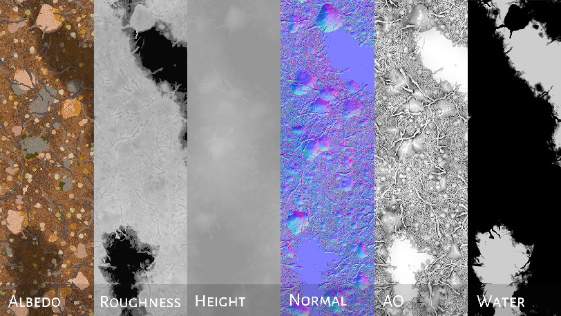

Substance Material: Dirt
2019

Learning Substance
Substance is getting more and more popular since I started learning CG. Although none of my professor has once mentioned about it, I felt the need to learn how to use Substance Designer and Painter to create and texture my CG work.

Working with Substance
Working with Substance is easier than I thought. There are many similar nodes in Maya, which is a software that I am familiar with, and that helped me a lot in understanding them. The scatter node is the one I find the most interesting, I helped a lot in combining recognizable object (like branches, leafs, and rocks) with procedurally generated texture together.
Results
I'm very pleased with the end result, as my first attempt. I find my experience with procedural texturing in Maya and my coding experience helped me understand this a lot better and I'm definitely going to keep practicing this software.